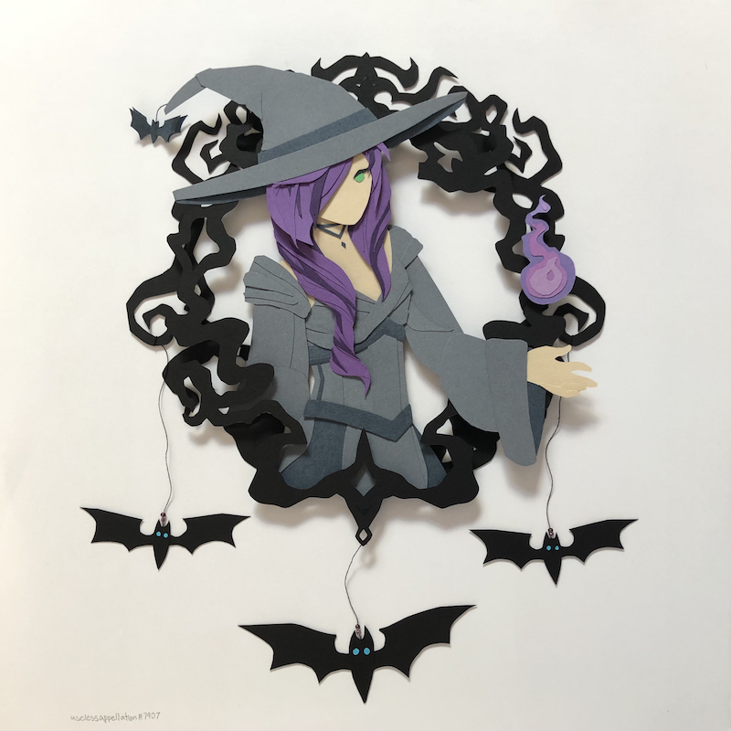

totalia papercraft
I crafted this piece for a 2020 Halloween contest, hosted by the Realm of the Mad God Discord. My concept was a hangable piece framing Totalia the Malevolent, a Halloween boss. The frame consists of two layers of black paper, one behind the figure and one (mostly) in front. I did my best to capture Totalia's grey ensemble (before 2021, she had a different sprite, more akin to this) and witchy powers. As seen in her attacks and the corresponding ST set, she produces a purple magic. Additionally, she can summon bats and bat-shaped shots. I worked to incorporate both of these themes into the piece to add more effects/layers. I did design this piece while keeping in mind how it would appear hung from the wall, so I thought the dangling bats added another dimension to that.
Colored cardstock, thread, beads; September 2020